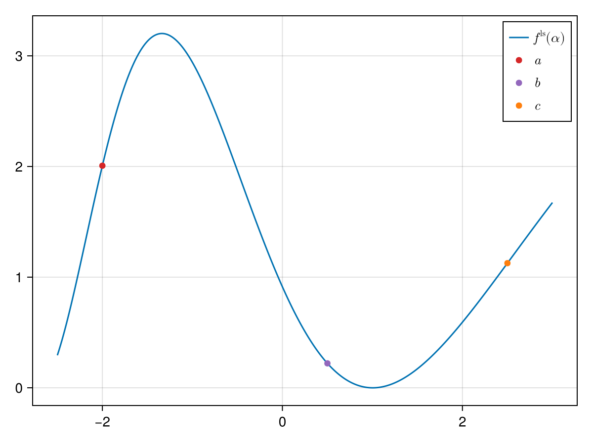
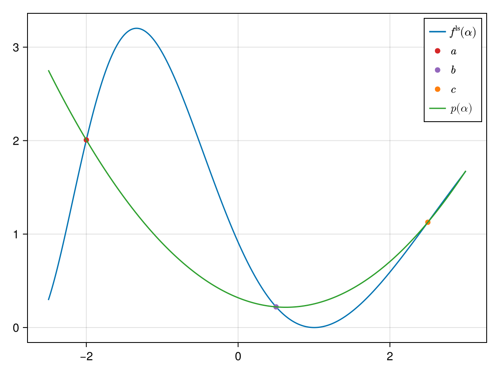
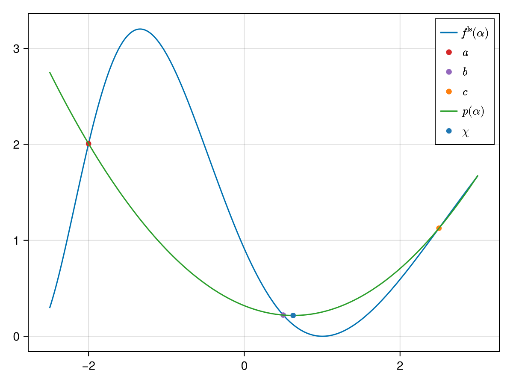
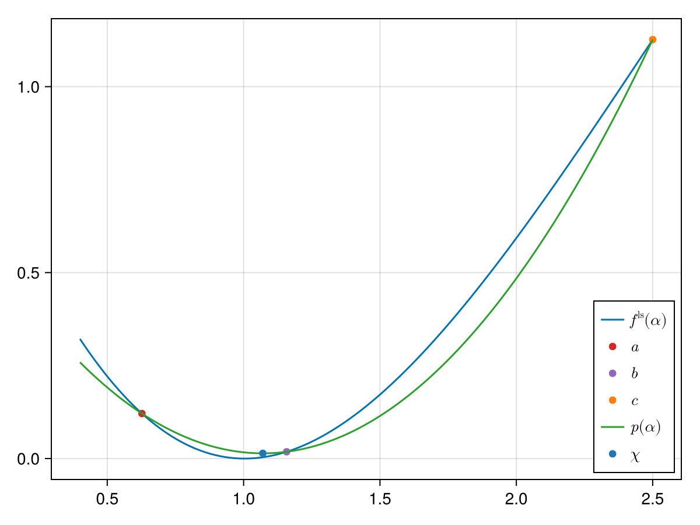
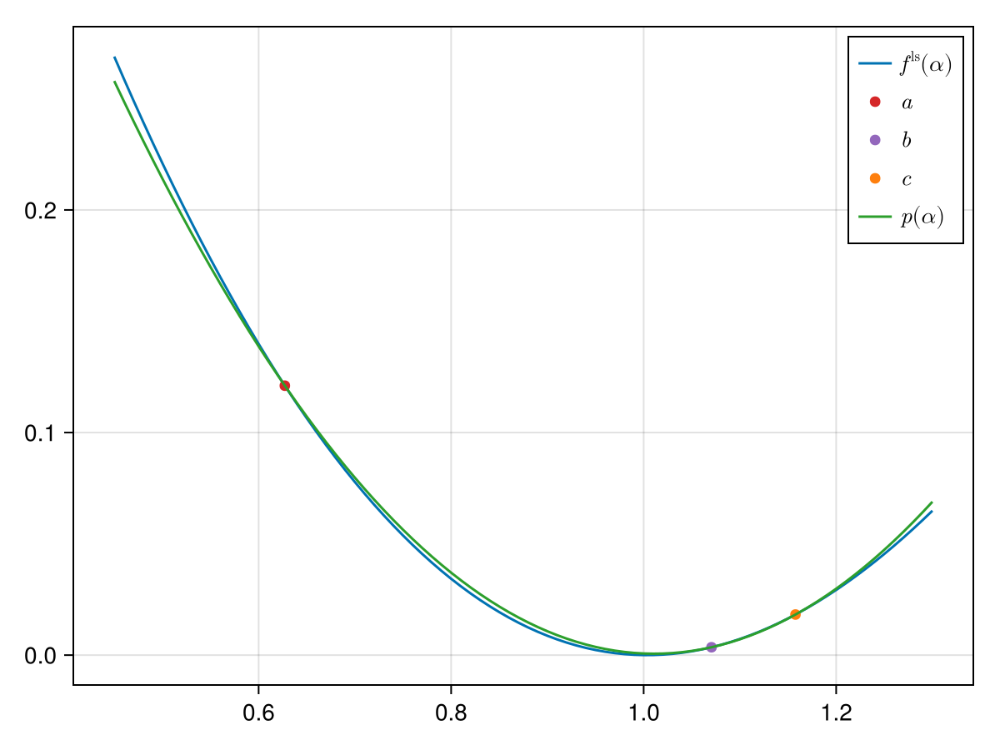

Bierlaire Quadratic Line Search
In [2] quadratic line search is defined as an interpolation between three points. For this consider
using SimpleSolvers
f(x::T) where {T<:Number} = exp(x) * (T(.5) * x ^ 3 - 5x ^ 2 + 2x) + 2one(T)
f(x::AbstractArray{T}) where {T<:Number} = exp.(x) .* (T(.5) * (x .^ 3) - 5 * (x .^ 2) + 2x) .+ 2one(T)
f!(y::AbstractVector{T}, x::AbstractVector{T}) where {T} = y .= f.(x)
j!(j::AbstractMatrix{T}, x::AbstractVector{T}) where {T} = SimpleSolvers.ForwardDiff.jacobian!(j, f!, similar(x), x)
F!(y, x, params) = f!(y, x)
J!(j, x, params) = j!(j, x)
x = -10 * rand(1)
solver = NewtonSolver(x, f.(x); F = F!)
params = nothing
update!(solver, x, params)
compute_jacobian!(solver, x, J!, params; mode = :function)
# compute rhs
f!(cache(solver).rhs, x)
rmul!(cache(solver).rhs, -1)
# multiply rhs with jacobian
factorize!(linearsolver(solver), jacobian(solver))
ldiv!(direction(cache(solver)), linearsolver(solver), cache(solver).rhs)
nls = NonlinearSystem(F!, x, f(x))
ls_obj = linesearch_objective(nls, cache(solver), params)
fˡˢ = ls_obj.F
∂fˡˢ∂α = ls_obj.D┌ Warning: This function should not be called! Instead call `compute_jacobian!(s, x, params)`.
└ @ SimpleSolvers ~/work/SimpleSolvers.jl/SimpleSolvers.jl/src/nonlinear/newton_solver.jl:187For the Bierlaire quadratic line search we need three points: $a$, $b$ and $c$:
a, b, c = -2., 0.5, 2.5
In the figure above we already plotted three points $a$, $b$ and $c$ on whose basis a second-order polynomial will be built that should approximate $f^\mathrm{ls}$.[1] The polynomial is built with the ansatz:
\[p(\alpha) = \beta_1(\alpha - a)(x - b) + \beta_2(\alpha - a) + \beta_3(\alpha - b),\]
and by identifying
\[\begin{aligned} p(a) & = f^\mathrm{ls}(a), \\ p(b) & = f^\mathrm{ls}(b), \\ p(c) & = f^\mathrm{ls}(c), \\ \end{aligned}\]
we get
\[\begin{aligned} \beta_1 & = \frac{(b - c)f^\mathrm{ls}(a) + (c - a)f^\mathrm{ls}(b) + (a - b)f^\mathrm{ls}(c)}{(a - b)(c - a)(c - b)}, \\ \beta_2 & = \frac{f^\mathrm{ls}(b)}{b - a}, \\ \beta_3 & = \frac{f^\mathrm{ls}(a)}{a - b}. \end{aligned}\]
We can plot this polynomial:

We can now easily determine the minimum of the polynomial $p$. It is:
\[\chi = \frac{1}{2} \frac{ f^\mathrm{ls}(a) (b^2 - c^2) + f^\mathrm{ls}(b) (c^2 - a^2) + f^\mathrm{ls}(c) (a^2 - b^2) }{f^\mathrm{ls}(a) (b - c) + f^\mathrm{ls}(b) (c - a) + f^\mathrm{ls}(c) (a - b)}.\]

We now use this $\chi$ to either replace $a$, $b$ or $c$ and distinguish between the following four scenarios:
- $\chi > b$ and $f^\mathrm{ls}(\chi) > f^\mathrm{ls}(b)$ $\implies$ we replace $c \gets \chi$,
- $\chi > b$ and $f^\mathrm{ls}(\chi) \leq f^\mathrm{ls}(b)$ $\implies$ we replace $a, b \gets b, \chi$,
- $\chi \leq b$ and $f^\mathrm{ls}(\chi) > f^\mathrm{ls}(b)$ $\implies$ we replace $a \gets \chi$,
- $\chi \leq b$ and $f^\mathrm{ls}(\chi) \leq f^\mathrm{ls}(b)$ $\implies$ we replace $b, c \gets \chi, b$.
In our example we have the second case: $\chi$ is to the right of $b$ and $f^\mathrm{ls}(\chi)$ is smaller than $f(b)$. We therefore replace $a$ with $b$ and $\b$ with $\chi$. The new approximation is the following one:

We again observe the second case. By replacing $a, b \gets b, \chi$ we get:

We now observe the first case: $\chi$ is to the left of $b$ and $f^\mathrm{ls}(\chi)$ is above $f(b)$. Hence we replace $b, c \gets \chi, b.$ A successive iteration yields:

After having computed $\chi$ we further either shift it to the left or right depending on whether $(c - b)$ or $(b - a)$ is bigger respectively. The shift is made by either adding or subtracting the constant $\varepsilon$.
Also see SimpleSolvers.DEFAULT_BIERLAIRE_ε.
- 1These points further need to satisfy $f^\mathrm{ls}(a) > f^\mathrm{ls}(b) < f^\mathrm{ls}(c)$.